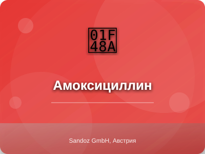

Амоксициллин (Amoxicillin)

Амоксициллин - препарат группы антибиотики
Описание препарата
Амоксициллин - полусинтетический антибиотик группы пенициллинов широкого спектра действия. Оказывает бактерицидное действие, ингибирует синтез пептидогликана клеточной стенки бактерий в период их деления и роста. Высокоэффективен в отношении Streptococcus pneumoniae, Haemophilus influenzae, Escherichia coli, Proteus mirabilis.
Состав
Активное вещество: амоксициллина тригидрат 250 мг, 500 мг, 1000 мг. Вспомогательные вещества: магния стеарат, желатин, титана диоксид, целлюлоза микрокристаллическая.
Показания к применению
Инфекции дыхательных путей (бронхит, пневмония), ЛОР-органов (отит, синусит, тонзиллит), мочеполовой системы (цистит, пиелонефрит, уретрит), кожи и мягких тканей, желудочно-кишечного тракта (брюшной тиф, сальмонеллез), болезнь Лайма, эрадикация Helicobacter pylori в составе комбинированной терапии.
Противопоказания
Гиперчувствительность к пенициллинам и цефалоспоринам, инфекционный мононуклеоз, лимфолейкоз, тяжелые нарушения функции печени, бронхиальная астма, поллиноз.
Категория при беременности: B
Способ применения и дозы
Внутрь, независимо от приема пищи. Взрослым и детям старше 10 лет: по 250-500 мг 3 раза в сутки. При тяжелых инфекциях: до 1 г 3 раза в сутки. Детям: 20-40 мг/кг/сут в 3 приема. Курс лечения 5-14 дней.
Побочные действия
Аллергические реакции: крапивница, эритема, отек Квинке, ринит, конъюнктивит, анафилактический шок. Со стороны ЖКТ: дисбактериоз, тошнота, рвота, диарея, стоматит, глоссит. Возможно развитие суперинфекции (особенно у пациентов с хроническими заболеваниями).
Взаимодействие с другими лекарствами
Снижает эффективность пероральных эстрогенсодержащих контрацептивов. Несовместим с аминогликозидами. Повышает токсичность метотрексата. Усиливает действие непрямых антикоагулянтов.
Передозировка
Симптомы: тошнота, рвота, диарея, нарушение водно-электролитного баланса. Лечение: промывание желудка, активированный уголь, симптоматическая терапия, гемодиализ эффективен.
Условия хранения
При температуре не выше 25°C в сухом, защищенном от света месте. Срок годности - 3 года.
Производитель
Sandoz GmbH, Австрия
Информация предоставлена в ознакомительных целях. Перед применением проконсультируйтесь с врачом. Данная инструкция не является руководством к самолечению.